If you have completed the last lab, then use the schema project you produce there. Otherwise here is a complete solution:
Launch Visual Paradigm and create a new Project called schema:
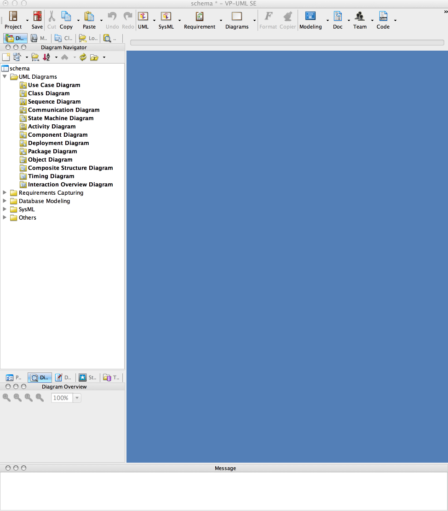
Select 'Tools->Code Engineering->Instant Reverse->Java' and in the subsequent dialog select 'Add Source Folder' and locate your schema project's 'app' folder
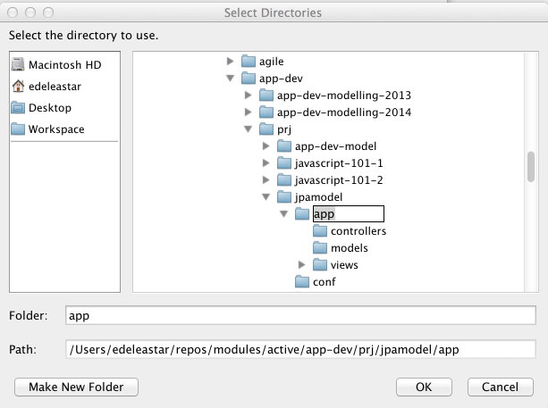
Select this and press ok
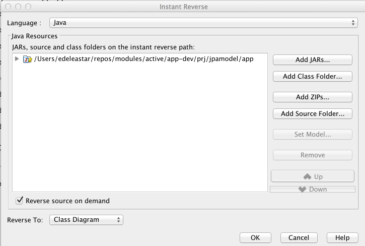
Press ok again, your project should look like this:
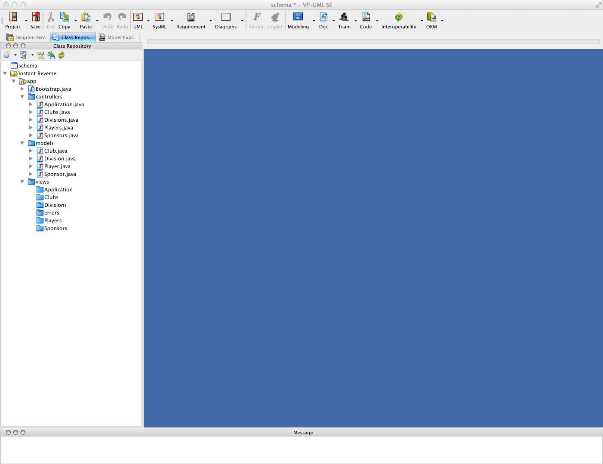
Play close attention to the 4 views available for the project:
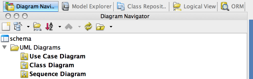
We are mostly interested in
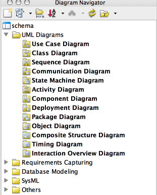
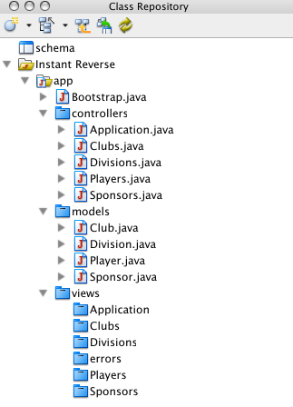
Before we generate a diagram, we will set some defaults regarding UML presentation and styling.
Select "Tools->Project Options->Diagramming->Shape", and set the Fill Format to be White:
Then select "Class->Presentation" on the same screen, and select "Hide all" for "Show Attribute option" and "Show operation option":
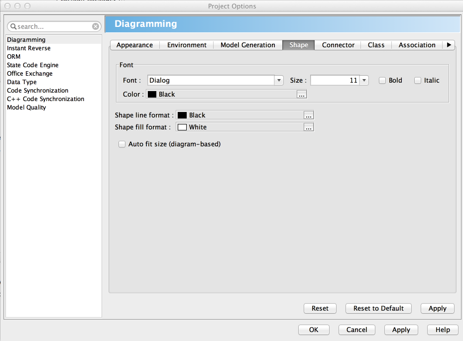
Open the "Diagram Navigator" view:
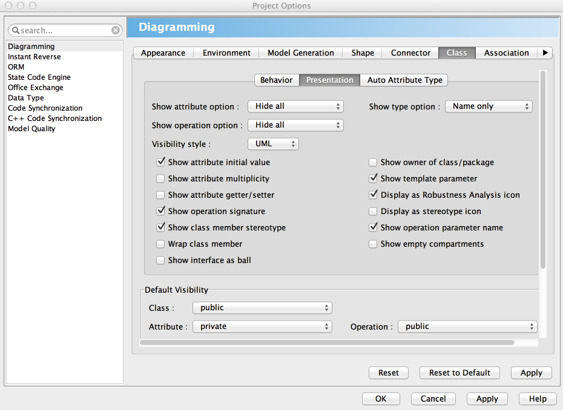
These changes to the default configuration will make the next steps a little clearer.
Open the diagram navigator, select 'Class Diagram' and create a new class diagram called 'models'
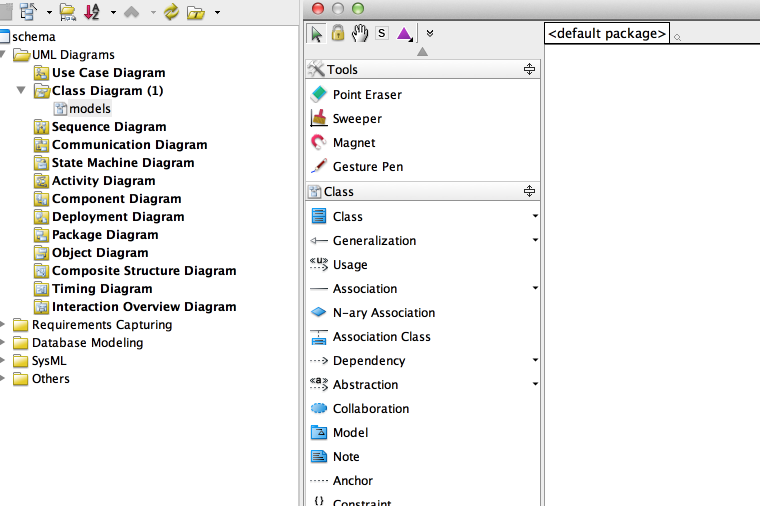
Switch to the 'Class Repository' view, and expand the various class:
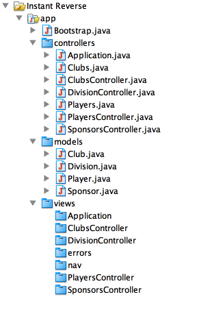
In "Class Repository", select all the classes under 'models' and drag them onto the (hopefully already open) canvas of the class diagram. You will asked about setting the default package to 'models' - say yes to this.
The generated diagram will look like this:
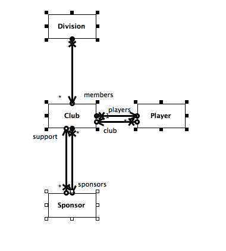
As you can see it has modeled each association individually. We can accept this, or rework the diagram to combine these associations like this:
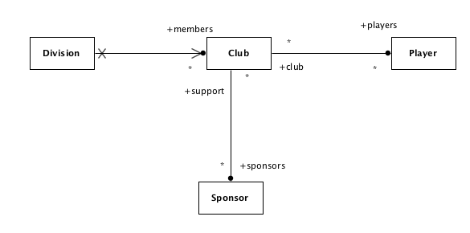
This is accomplished by just deleting on of the associations and equipping the other with the correct characteristics.
Switch back to "Diagram Navigator", and create a new Package Diagram called 'schema':
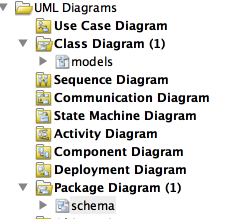
Create a single package called 'models' by dragging the 'Package' icon onto the canvas:
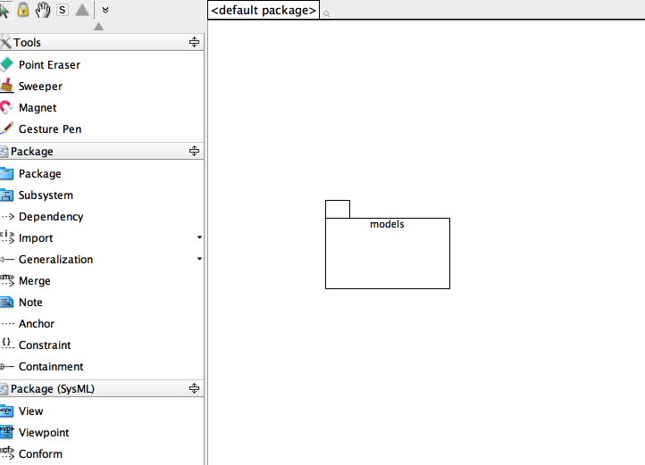
Because we have named the package the same as the class diagram - it should be able to navigate form one to the other just by right-clicking on the package.
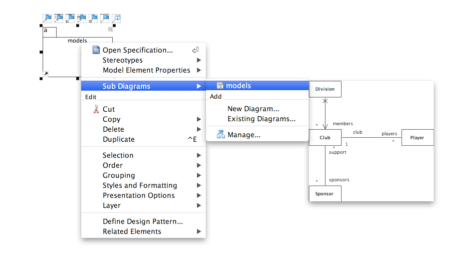
Create another packaged called "play" in the same package diagram. Now create a new "Class Diagram" also called "play". Populate this class diagram with these four classes:
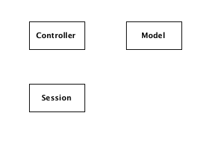
This models classes we did not write, but are part of our application via the Play framework.
Do the same exercise for a another pair of package/class diagrams called 'controllers', and also another pair called 'views'.
Using the 'Dependency' tool, configure the package diagram to look like this:
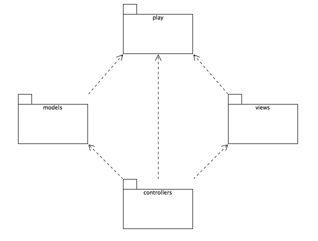
This is the top-level 'Architecture' for you application.
Open the 'models' class diagram and select all of the classes on the canvas and copy them to the clipboard.
Now open the controllers class diagram, and paste the clipboard
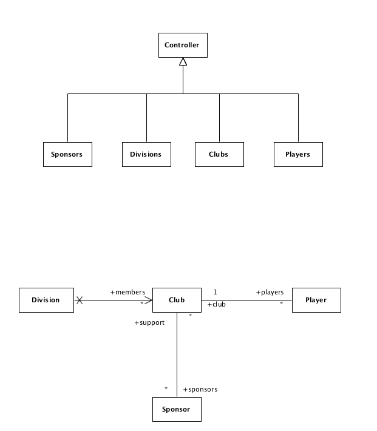
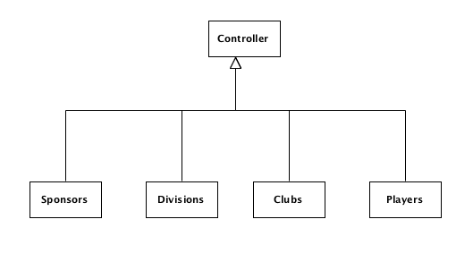
All the relationships shown here are 'Generalization' - which is anther word for inheritance. Some of the classes when you drag them over with be already wired up like this, others you will need to manually create.
Also, note that 'Controller' class has '(play)' under it, and the model classes have '(models)'. This indicates they are from a different package. To show this, right click on the each of these classes and select 'Presentation Options->Show Owner->Show Fully Qualified'. Essentially, we are indicating that these classes belong to a different package.
Now we will drag in the model classes (drag them from the schema/models tree control at the top of the Class Repository).
The Controller classes 'depend' on these classes in a specific configuration. Using the 'Dependency' relation, see if you can reconfigure the controllers class diagram to look something like this:
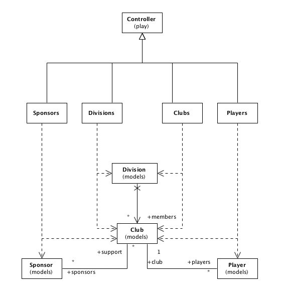
Inspect the sources of the controllers again, verify that the above diagram accurately captures these dependencies.
The Package and Class diagrams we have assembled to date represent 'structural' information about our design. I.e. the relationships between the classes.
Sequence Diagrams will attempt to show some 'behavioral' information. That is, how the objects may interact in response to some specific event. Sequence diagrams are often traced back to 'User Stories' - specifically, how our objects collaborate to deliver some feature.
These diagrams can be difficult to draw and maintain. However, the tool we are using has the ability to analyze our code and 'reverse engineer' these diagrams.
Select the PlayersControler.java->PlayersController->newPlayer() icon, right click:
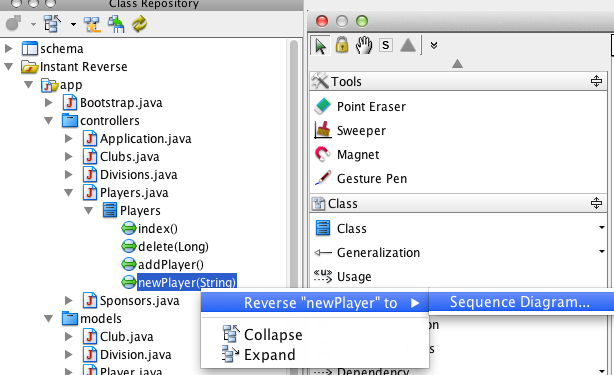
.. and select "Reverse "newPlayer" to"->Sequence Diagram"
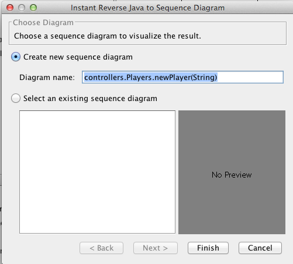
Accept the default diagram name, press finish, and the following diagram will be generated:
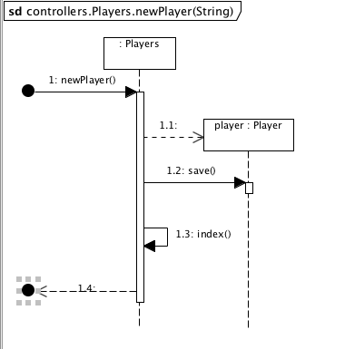
Read the source again for this method - and see if you can make sense of the notation.
public static void newPlayer()
{
List<Club> clubs = Club.findAll();
render(clubs);
}
Try a more sophisticated method (make sure it is a new sequence diagram - not an existing one):
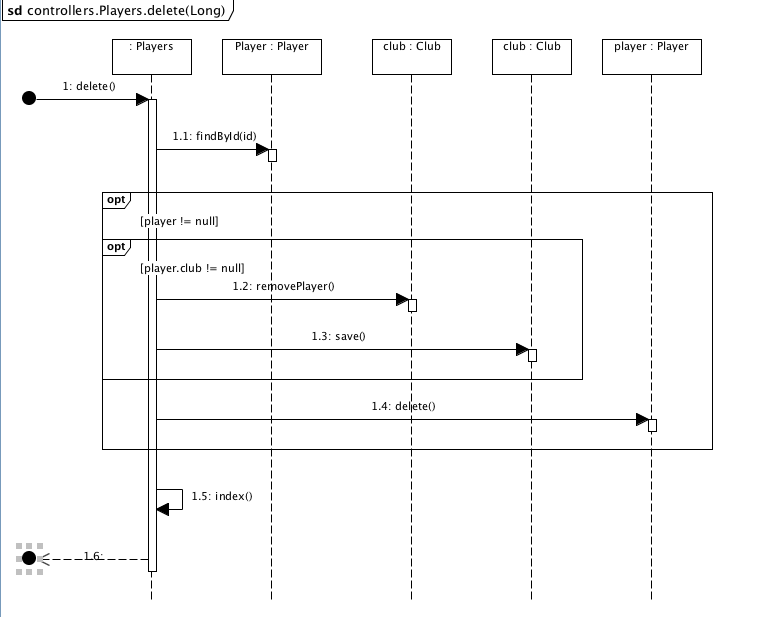
This is considerably more complex. Here is the code:
public static void delete(Long id)
{
Player player = Player.findById(id);
if (player != null)
{
if (player.club != null)
{
player.club.removePlayer(player);
player.club.save();
}
player.delete();
}
index();
}
Here is probably the most complicated one:
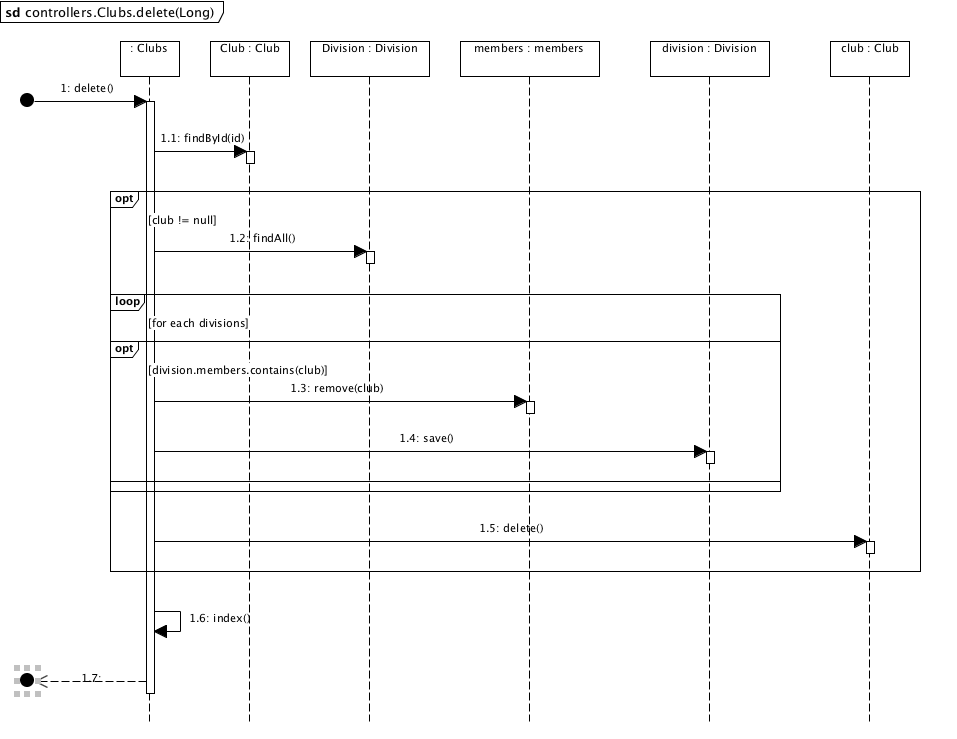
public static void delete(Long id)
{
Club club = Club.findById(id);
if (club != null)
{
List<Division> divisions = Division.findAll();
for (Division division : divisions)
{
if (division.members.contains(club))
{
division.members.remove(club);
division.save();
}
}
club.delete();
}
index();
}
Your Diagram Explorer might begin to look like this:
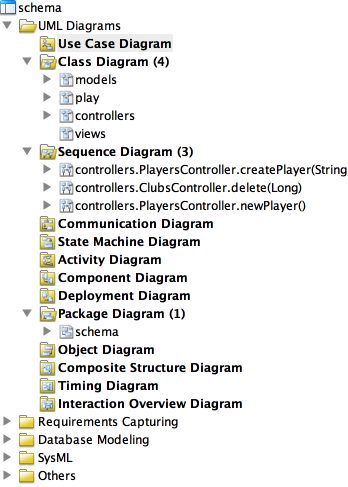
The last diagram type to explore is "Use Case Diagram".
Create one now - to model a 'New Player' user story:
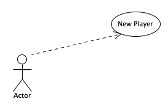
Try a few more stories...
This is a version of the model here:
Experiment with some more diagrams, particularly some more Sequence Diagrams.